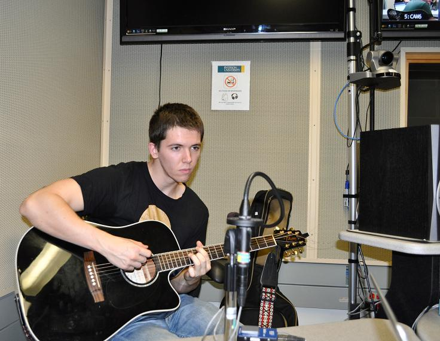
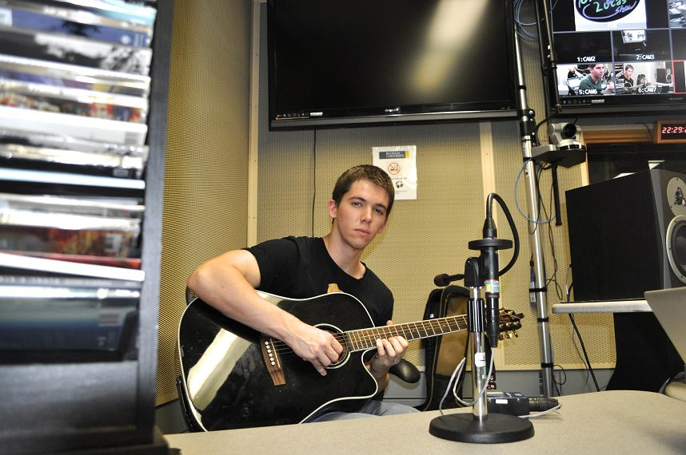

Article and Video By Julia Ho
Photos by Erin Bender Kerbel
Uploaded on November 16, 2013
|
Acoustic guitarist Zachary Henderson isn't just another hipster trying to delve into the "too-underground-for-you" music scene. Hopping into the indie bandwagon is too mainstream for Henderson. He would rather drive it. The 19-year-old musician is bored by the typical love anthems that most musicians have somewhere in their repertoire. Henderson's music is focused more on issues than emotions. "I stray away from the topic of love. It's too generic," Henderson says. For an adolescent who is still figuring things out, it's refreshing to hear that love and romance are not what drives him to create and perform. Henderson does, however, draw inspiration from his alternative music heroes like Radiohead and Mumford & Sons, and from the tonal quality of Ben Howard and Bon Iver. The second year Politics and Governance major doesn't let his newbie status get in the way of his musical ambitions. "I'm not an experienced veteran in any way," he says. His advice? "Don't give in and don't compromise who you are." Henderson stresses how important it is to immerse yourself in your music, and stay determined no matter the obstacles you may face on the learning curve. Improvement over time is a given, which is why Henderson says he will always like his new stuff better than his old stuff. |
|  |
Henderson talked about his nerve-racking experience at his first open mic, in The Casbah in Hamilton, Ont. Despite being surrounded by friends and making it through a great performance, Henderson remembered how terrified he was singing by himself for an audience for the first time. Since then, Henderson has gone on to perform at numerous open mics, making regular appearances to many, and even full sets at some studios. One of his first performances was at Toronto's Annette Studios. It's these types of venues that Zack says he likes the most because of how intimate the setting is, which makes for a special show and cool atmosphere. He recently performed on a Ryerson radio show — The Gilberto and Lucas Show — and says he tries to do full sets at least once a month. |

Spotlight Editor in Chief
Vjosa Isai
vjosa.isai@ryerson.ca
Want to get your time under the lights? Are you a writer looking to join the Artist Spotlight initiative? E-mail us at music@ryerson.ca to see how!